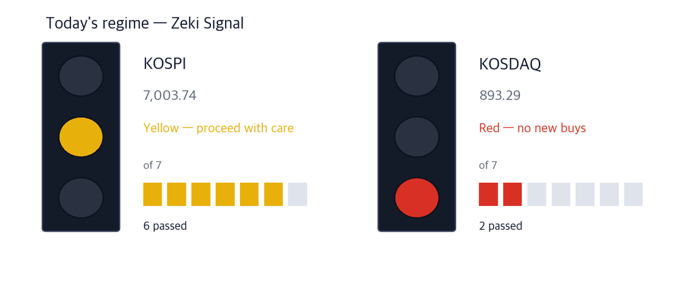

KOSPI 7,003.74 +0.46% | KOSDAQ 893.29 -0.11% | Zeki Signal Yellow |

Green favours buying, yellow says wait, red says hold off. The cells count how many of seven conditions are met - more cells mean the advance is broader. At the October 2 close the KOSPI meets 6 of 7 and reads yellow; the KOSDAQ meets 2 and reads red. With no trading over the holiday, neither has changed.
Wait — the stance the signal implies.
Seoul reopens on Tuesday, October 6, after the holiday. Ahead of third-quarter results, earnings hopes are moving beyond chips. A stronger won has lowered expectations for Samsung Electronics and SK Hynix.
FnGuide data show third-quarter operating profit forecasts fell 3.2% for Samsung Electronics and 1.6% for SK Hynix over the past month. Forecasts for shipbuilders, refiners and electronic parts makers rose over the same period. (Korea Economic Daily, Oct 6)
In the Middle East, Iran has resumed attacks on ships in the Strait of Hormuz. Britain's maritime trade agency has reported 7 since September 28. Oil, which fell after the G7 reserve release, could swing again. (Maeil Business Newspaper, Oct 6)
In New York on October 2 the Nasdaq Composite closed at 27,190.86 and the S&P 500 at 7,722.72 (Investor's Business Daily, Oct 2).
Here is what to do now, before Seoul reopens on Tuesday.
① Look at parts makers whose earnings forecasts rose. Samsung Electro-Mechanics' third-quarter profit forecast is up 32.0% in three months on strong sales of AI server parts.
② LG Electronics' chiller deal reaches the price for the first time. It will supply up to 5 trillion won of cooling units to US AI data centers. The news came on October 5, while Seoul was closed.
③ Shipbuilders' profit forecasts rose, but their prices did not follow. We do not cover them as names today.
The number is 1,370 won per dollar, the exchange rate brokers now assume when re-estimating third-quarter results. The earlier assumption was 1,430. A stronger won shrinks the won value of exporters' dollar earnings. (Korea Economic Daily, Oct 6)
| Date | What to watch | What it changes |
|---|---|---|
| Tue Oct 6 | First session after the holiday | Holiday-period earnings revisions and Middle East news are priced in at once |
| Wed Oct 7 | FOMC minutes (September 15–16 meeting; early Oct 8 Seoul time) | Shows whether members wanted more hikes; Treasury yields move first |
| Fri Oct 9 | Hangul Day holiday | Cuts the week to three sessions |
LG Electronics signed a long-term chiller supply deal with Air Control Concepts (AIR), a US data center infrastructure firm. A chiller makes large volumes of cold water to cool servers. The industry puts the deal at up to 5 trillion won.
Supply totals 5GW, enough to cool 50 data centers of 100MW each. First-half orders for cooling equipment topped 600 billion won. The company says its 1 trillion won chiller sales goal could come this year instead of next. (Korea Economic Daily and Maeil Business Newspaper, Oct 6)
| Close | Day | Week | 20 sessions |
|---|---|---|---|
| 215,500 won | +1.65% | +2.38% | +7.48% |
| 3 months | Zeki Strength | From 1-yr high |
|---|---|---|
| +11.48% | 92 | -45.10% |
| Who | LG Electronics, a maker of home appliances and heating, ventilation and cooling systems. |
| What | Closed at 215,500 won on October 2, up 1.65%, 45.1% below its one-year high of 392,500 won on June 2. |
| When | The deal was announced on October 5, while Seoul was closed, so it is not yet in the price. |
| Where | Listed on the main board. It trades about 142.1bn won a day. |
| Why | As servers run hotter, cooling becomes core data center equipment. Its coolant distribution units have also won Nvidia certification. |
| How | Volume on October 2 was 0.42 times the 50-day average, below normal. Both groups were net buyers that day. |
Samsung Electro-Mechanics is selling more multilayer ceramic capacitors (MLCCs) for AI servers. Pricier products make up more of its sales, and selling prices have risen. Its third-quarter operating profit forecast is 621.4 billion won, up 5.1% in a month. (Korea Economic Daily, Oct 6)
Chip equipment stocks rose too. As of October 2, nearly half of the 10 best-performing Korean equity ETFs over the past month held chip parts and equipment makers. Six such firms are among the KOSDAQ's 10 largest by market value. (Maeil Business Newspaper, Oct 6)
| Close | Day | Week | 20 sessions |
|---|---|---|---|
| 1,577,000 won | +1.48% | +5.06% | +12.64% |
| 3 months | Zeki Strength | From 1-yr high |
|---|---|---|
| -28.48% | 98 | -30.53% |
| Who | Samsung Electro-Mechanics, a Samsung parts maker of MLCCs and chip substrates. |
| What | Closed at 1,577,000 won on October 2, up 1.48%. It rose 5.06% over the week. |
| When | The October 2 close. Third-quarter results are still to come. |
| Where | Listed on the main board. It trades about 904.2bn won a day. |
| Why | More orders for AI server MLCCs have raised the share of pricier products. |
| How | Volume on October 2 was 0.66 times the 50-day average. Both groups were net buyers that day. |
| Close | Day | Week | 20 sessions |
|---|---|---|---|
| 537,000 won | -3.94% | +11.99% | +33.58% |
| 3 months | Zeki Strength | From 1-yr high |
|---|---|---|
| +23.45% | 88 | -12.25% |
| Who | EO Technics, a maker of laser equipment used in chipmaking. |
| What | Closed at 537,000 won on October 2, down 3.94%. It rose 11.99% over the week. |
| When | As of the October 2 close, when it ranked 7th on the KOSDAQ by market value. |
| Where | Listed on the KOSDAQ. It trades about 45.3bn won a day. |
| Why | Chipmakers are spending more on plants than expected, so equipment orders should rise. |
| How | Volume on October 2 was 0.91 times the 50-day average. Foreign investors sold and institutions bought that day. |
HD Hyundai's third-quarter operating profit forecast rose 12.9% in a month to 3.12 trillion won, as more of its work comes from ships ordered at higher prices. The forecast for the whole shipbuilding sector is up 24.7% in three months. (Korea Economic Daily, Oct 6)
Prices went the other way. As of October 2, HD Hyundai fell 4.3% over 20 sessions and Hanwha Ocean fell 23.8% over three months. The trend points down, so we do not cover them as names today. We will once prices turn to follow the forecasts.
| Name | ①up 20d | ②Str. 90+ | ③For. buy | ④Inst. buy | Met | Weight |
|---|---|---|---|---|---|---|
| LG Electronics (066570) | O | O | O | O | 4/4 | Well grounded |
| Samsung Electro-Mechanics (009150) | O | O | O | O | 4/4 | Well grounded |
| EO Technics (039030) | O | X | X | O | 2/4 | Needs checking |
The four columns ask: ① up over 20 sessions ② Zeki Strength 90 or higher ③ foreign net buying over 20 sessions ④ institutional net buying over 20 sessions. The count of O sets the weight of evidence. Cooling and electronic parts have both price and money behind them; chip equipment has the price, but foreign investors sold.
| Name | Foreign / Inst, 20d | Volume | How to read it |
|---|---|---|---|
| SFASemicon 036540 | F +15.4 · I -5.3 | 1.70x | Caution — Only foreigners bought; institutions sold |
| Posco International 047050 | F -1.6 · I +18.4 | 0.38x | Caution — Only institutions bought; foreigners sold |
| POSCO DX 022100 | F -0.9 · I +9.8 | 0.26x | Caution — Only institutions bought; foreigners sold |
| Woori Financial Group 316140 | F +31.8 · I +3.3 | 1.05x | Check✓ — Both bought, but on thin volume |
| Korean Air Lines 003490 | F +8.7 · I +2.2 | 0.81x | Check✓ — Both bought, but on thin volume |
| SK Hynix 000660 | F -6.3 · I +0.1 | 0.58x | Caution — Only institutions bought; foreigners sold |
| Daewoo Engineering & Construction 047040 | F -5.6 · I -2.5 | 1.04x | Wait — Both sides selling, but volume has dried up |
| Doosan Enerbility 034020 | F -7.2 · I -0.3 | 0.67x | Wait — Both sides selling, but volume has dried up |
| LG Display 034220 | F -8.0 · I -0.6 | 0.60x | Wait — Both sides selling, but volume has dried up |
| Netmarble 251270 | F -11.1 · I -0.2 | 0.39x | Wait — Both sides selling, but volume has dried up |
| Stock | Net shares, 20 days | Zeki Strength | 20 trading days | As of |
|---|---|---|---|---|
| Woori Financial Group 316140 | +31,830,909 | 66 | -2.2% | 10-02 |
| SFASemicon 036540 | +15,350,798 | 94 | +97.6% | 10-02 |
| Korean Air Lines 003490 | +8,670,263 | 73 | +6.7% | 10-02 |
| Koh Young 098460 | +3,424,825 | 81 | +22.8% | 10-02 |
| HYUNDAI MOVEX 319400 | +2,294,251 | 72 | -3.7% | 10-02 |
| Stock | Net shares, 20 days | Zeki Strength | 20 trading days | As of |
|---|---|---|---|---|
| Samsung Electronics 005930 | -18,489,897 | 93 | +10.2% | 10-02 |
| Netmarble 251270 | -11,138,579 | 11 | -4.7% | 10-02 |
| LG Display 034220 | -8,023,601 | 10 | -4.9% | 10-02 |
| Doosan Enerbility 034020 | -7,230,443 | 47 | +6.3% | 10-02 |
| Hanon Systems 018880 | -6,672,550 | 60 | +12.8% | 10-02 |
| Stock | Net shares, 20 days | Zeki Strength | 20 trading days | As of |
|---|---|---|---|---|
| Posco International 047050 | +18,354,295 | 52 | +6.4% | 10-02 |
| Samsung Electronics 005930 | +15,575,724 | 93 | +10.2% | 10-02 |
| POSCO DX 022100 | +9,769,685 | 20 | +0.2% | 10-02 |
| Hanon Systems 018880 | +8,454,799 | 60 | +12.8% | 10-02 |
| Macquarie Korea Infrastructure 088980 | +4,872,219 | 28 | -0.4% | 10-02 |
| Stock | Net shares, 20 days | Zeki Strength | 20 trading days | As of |
|---|---|---|---|---|
| SFASemicon 036540 | -5,254,344 | 94 | +97.6% | 10-02 |
| Daewoo Engineering & Construction 047040 | -2,455,205 | 95 | +8.7% | 10-02 |
| Koh Young 098460 | -2,401,599 | 81 | +22.8% | 10-02 |
| NAVER 035420 | -2,011,223 | 28 | -8.0% | 10-02 |
| YCC 232140 | -1,973,920 | 71 | +40.5% | 10-02 |
Even when the story and the price agree, we check the money separately. The table asks whether October 2 volume actually cleared the bar to beat (the 50-day average).
| Name | Cleared? | Flows (as of) | How to read it |
|---|---|---|---|
| LG Electronics (066570) | 0.42x ✗ | F buy · I buy (10/2) | Check — both bought, thin volume |
| Samsung Electro-Mechanics (009150) | 0.66x ✗ | F buy · I buy (10/2) | Check — both bought, thin volume |
| EO Technics (039030) | 0.91x ✗ | F sell · I buy (10/2) | Caution — only institutions bought |
"Cleared?" is October 2 volume divided by the 50-day average; above 1x earns a ✓. All three traded below normal volume on October 2.
| Weight of evidence | Names | Beat KOSPI | Winners led by | Losers trailed by | All averaged |
|---|---|---|---|---|---|
| Well grounded | 15 | 12 / 15 | +8.30%p | -4.35%p | +5.77%p |
| Grounded | 15 | 7 / 15 | +6.66%p | -5.53%p | +0.16%p |
| Needs checking | 35 | 11 / 35 | +7.04%p | -4.14%p | -0.63%p |
| Thin | 1 | 1 / 1 | +7.22%p | none | +7.22%p |
| No basis | 2 | 0 / 2 | none | -5.15%p | -5.15%p |
| Excluded | 1 | 1 / 1 | +4.40%p | none | +4.40%p |
| Well grounded 15 | +5.77%p | ||||||
| Grounded 15 | +0.16%p | ||||||
| Needs checking 35 | −0.63%p | ||||||
| Thin 1 | +7.22%p | ||||||
| No basis 2 | −5.15%p | ||||||
| Excluded 1 | +4.40%p |
The centre line is KOSPI. Right is ahead, left is behind. The grey number is how many names are in that band.
Of 15 Well grounded names, 12 beat KOSPI. Those 12 led by 8.3%p on average; the 3 that lost trailed by 4.4%p. All together: +5.8%p.
After 20 sessions (about a month): results first arrive on Oct 14; they are added here as a table as they fill.
After 60 sessions (about three months): results first arrive on Dec 9; they are added here as a table as they fill.
Verdict. Once both markets together reach 60 cases for a window, we run the test fixed in advance and print what it says. 5 sessions, 156 cases — Not shown to beat the index. But higher-grade names did better. (46.8% beat the index) · 20 sessions: 0 of 60 · 60 sessions: 0 of 60
| When | What to watch | What it means |
|---|---|---|
| First 30 minutes (09:00–09:30) | Does LG Electronics open above its October 2 close of 215,500 won? | The 5 trillion won deal, announced during the holiday, reaches the price for the first time |
| During the session | Does Samsung Electro-Mechanics volume top its 50-day average? | Shows whether money follows parts makers with rising forecasts |
| Last 30 minutes (15:00–15:30) | Does the KOSPI hold above 7,003.74? | That is the October 2 close; shows whether lower chipmaker forecasts are absorbed |
At the October 6 open, watch whether the chiller deal shows up in LG Electronics' price, and whether the Hormuz attacks cut oil shipments again. The FOMC minutes come on October 7 US time. Markets close on October 9 for Hangul Day.
This is the Rex Way, ZekiRex™